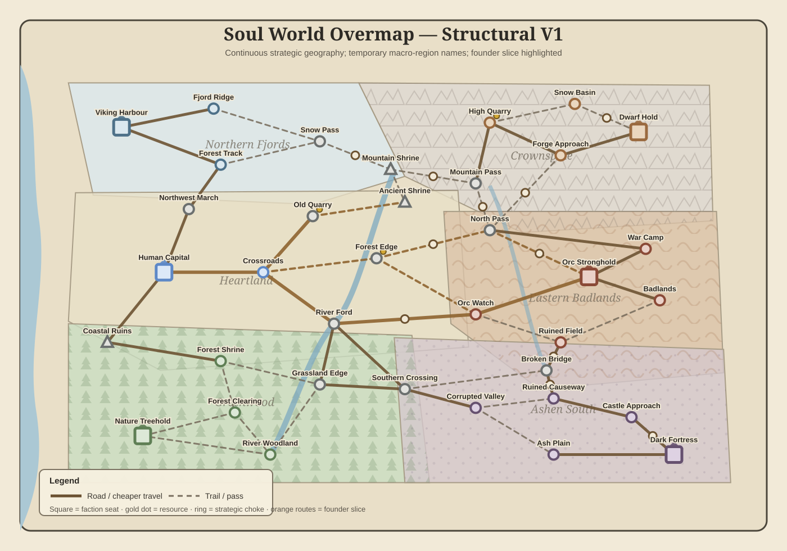
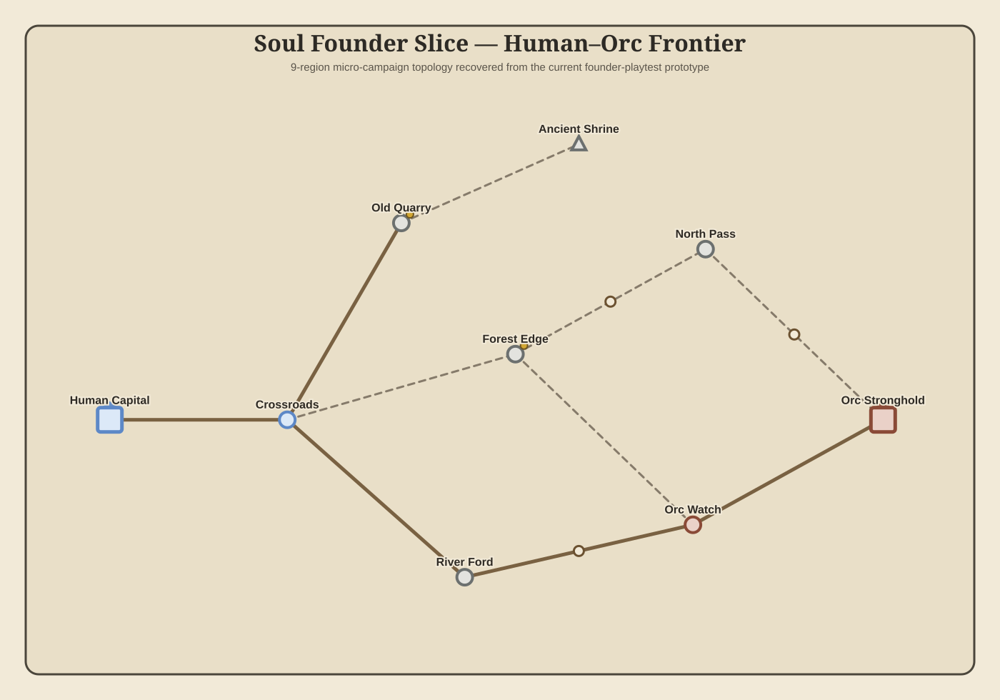

Founder slice

Current gates
36 strategic regions · 51 links · six faction seats.
Founder slice: nine regions and three short Human→Orc approaches.
One campaign-region move is one AP. Edge cost 6–10 is logistics/readiness/supply pressure, not AP.
Region catalogue
| Region | Macro region | Owner | Feature | Battle recipe |
|---|---|---|---|---|
| Ash Plain | ashen_south | dark | dead_ground | dark.ash_plain |
| Castle Approach | ashen_south | dark | alien_castle | dark.castle_approach |
| Corrupted Valley | ashen_south | dark | mist | dark.corrupted_valley |
| Dark Fortress | ashen_south | dark | throne_sanctum | dark.castle_approach |
| Ruined Causeway | ashen_south | dark | ruined_bridge | dark.ruined_causeway |
| Dwarf Hold | crownspine | dwarves | great_forge | dwarf.forge_approach |
| Forge Approach | crownspine | dwarves | forge_gate | dwarf.forge_approach |
| High Quarry | crownspine | dwarves | quarry | dwarf.high_quarry |
| Mountain Pass | crownspine | neutral | switchback | dwarf.mountain_pass |
| Mountain Shrine | crownspine | neutral | shrine | neutral.mountain_shrine |
| Snow Basin | crownspine | dwarves | bowl | dwarf.snow_basin |
| Badlands | eastern_badlands | orcs | dry_gully | orc.badlands |
| Broken Bridge | eastern_badlands | neutral | broken_bridge | orc.broken_bridge |
| North Pass | eastern_badlands | neutral | narrow_pass | dwarf.mountain_pass |
| Orc Stronghold | eastern_badlands | orcs | stronghold | orc.war_camp |
| Orc Watch | eastern_badlands | orcs | watch | orc.badlands |
| Ruined Field | eastern_badlands | orcs | ruins | orc.ruined_field |
| War Camp | eastern_badlands | orcs | camp | orc.war_camp |
| Coastal Ruins | greenwood | neutral | ruins | neutral.coastal_ruins |
| Forest Clearing | greenwood | nature | dense_treeline | nature.forest_clearing |
| Forest Shrine | greenwood | nature | ancient_shrine | nature.ancient_shrine |
| Grassland Edge | greenwood | neutral | forest_edge | nature.grassland_edge |
| Nature Treehold | greenwood | nature | great_tree | nature.forest_clearing |
| River Woodland | greenwood | nature | river | nature.river_woodland |
| Southern Crossing | greenwood | neutral | road_crossing | neutral.open_grassland |
| Ancient Shrine | heartland | neutral | ancient_shrine | neutral.mountain_shrine |
| Crossroads | heartland | humans | crossroads | human.grassland_crossroads |
| Forest Edge | heartland | neutral | grove | nature.grassland_edge |
| Human Capital | heartland | humans | capital | human.fortress_outskirts |
| Northwest March | heartland | neutral | trade_road | human.rolling_ridge |
| Old Quarry | heartland | neutral | resource | human.rolling_ridge |
| River Ford | heartland | neutral | river_crossing | human.river_road |
| Fjord Ridge | northern_fjords | vikings | water_edge | viking.fjord_ridge |
| Forest Track | northern_fjords | vikings | village_edge | viking.forest_track |
| Snow Pass | northern_fjords | neutral | narrow_pass | viking.snow_pass |
| Viking Harbour | northern_fjords | vikings | shore_bridge | viking.harbour_edge |